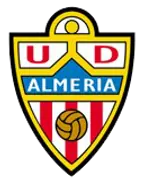

Real Oviedo
Real Oviedo7-6-6
victorias · empates · derrotas

U.D. AlmeríaHistorial del Real Oviedo contra U.D. Almería: 19 partidos (7 victorias, 6 empates, 6 derrotas, 24-25 en goles). Último enfrentamiento: U.D. Almería 2-2 Real Oviedo (24 oct 2026).
19Jugados
7Victorias
6Empates
6Derrotas
24Goles a favor
25Goles en contra
En casa: 9 partidos (5 victorias). Fuera: 10 partidos (2 victorias). Datos desde la temporada 2009/10.
Todos los partidos
-
24 oct 2026
2026/27 U.D. Almería – Real OviedoSegunda División · Jornada 11 2-2 -
11 jun 2025
2024/25 Real Oviedo – U.D. AlmeríaFase de Ascenso · Semifinal (Vuelta) 1-1 -
7 jun 2025
2024/25 U.D. Almería – Real OviedoFase de Ascenso · Semifinal (Ida) 1-2 -
1 feb 2025
2024/25 U.D. Almería – Real OviedoSegunda División · Jornada 25 1-1 -
13 oct 2024
2024/25 Real Oviedo – U.D. AlmeríaSegunda División · Jornada 9 3-2 -
29 ene 2022
2021/22 Real Oviedo – U.D. AlmeríaSegunda División · Jornada 25 2-0 -
20 ago 2021
2021/22 U.D. Almería – Real OviedoSegunda División · Jornada 2 2-1 -
1 may 2021
2020/21 U.D. Almería – Real OviedoSegunda División · Jornada 37 2-2 -
30 nov 2020
2020/21 Real Oviedo – U.D. AlmeríaSegunda División · Jornada 15 1-2 -
16 ene 2020
2019/20 U.D. Almería – Real OviedoSegunda División · Jornada 23 2-0 -
1 nov 2019
2019/20 Real Oviedo – U.D. AlmeríaSegunda División · Jornada 14 0-0 -
27 abr 2019
2018/19 U.D. Almería – Real OviedoSegunda División · Jornada 36 0-1 -
8 dic 2018
2018/19 Real Oviedo – U.D. AlmeríaSegunda División · Jornada 17 1-2 -
20 ene 2018
2017/18 Real Oviedo – U.D. AlmeríaSegunda División · Jornada 23 2-1 -
26 ago 2017
2017/18 U.D. Almería – Real OviedoSegunda División · Jornada 2 1-1 -
29 ene 2017
2016/17 U.D. Almería – Real OviedoSegunda División · Jornada 23 3-0 -
27 ago 2016
2016/17 Real Oviedo – U.D. AlmeríaSegunda División · Jornada 2 2-0 -
22 may 2016
2015/16 U.D. Almería – Real OviedoSegunda División · Jornada 39 3-1 -
20 dic 2015
2015/16 Real Oviedo – U.D. AlmeríaSegunda División · Jornada 18 1-0